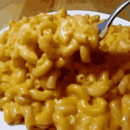

Simple Macaroni and Cheese

Description
A timeless classic! It involves basic ingredients which are probably already in
your pantry.
It's also a dish with many different interpretations, so
there is no harm in experimenting with different ingredients
to suit a whole variety of taste buds!
Ingredients
- 1 (8 ounce) box elbow macaroni
- 0.25 cup butter
- 0.25 cup all-purpose flour
- 0.5 teaspoon salt
- ground black pepper to taste
- 2 cups milk
- 2 cups shredded cheddar cheese
Steps
- Bring a large pot of lightly salted water to a boil. Cook elbow
macaroni in the boiling water, stirring occasionally until cooked
through but firm to the bite, 8 minutes.
- At the same time, melt butter in a saucepan over medium heat.
- Add flour, salt, and pepper and stir until smooth, about 5 minutes.
- Pour in milk slowly, while stirring continously. Continue to cook and
stir until mixture is smooth and bubbling, about 5 minutes, making
sure the milk doesnt burn.
- Add cheddar cheese and stir until melted, 2 to 4 minutes.
- Drain macaroni and fold into cheese sauce until coated.
- Serve hot and enjoy!